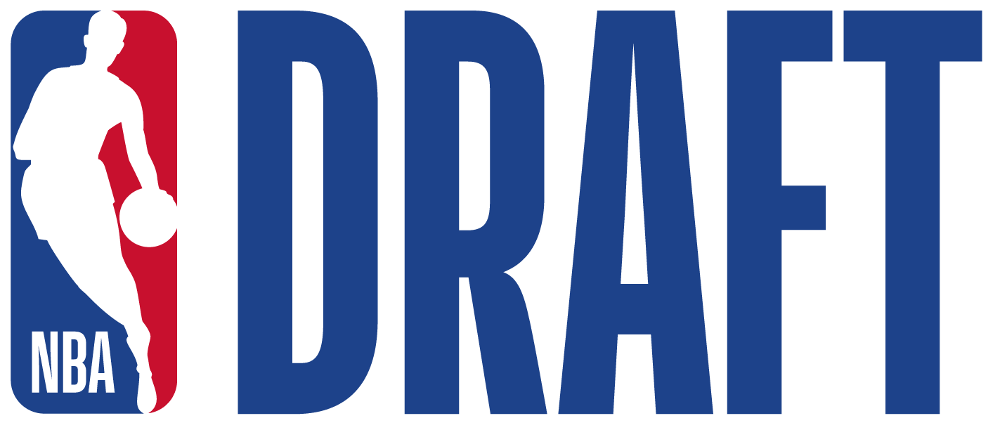
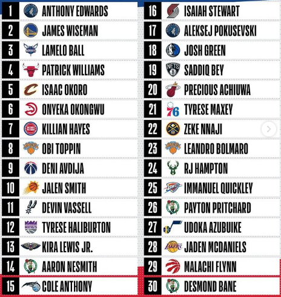
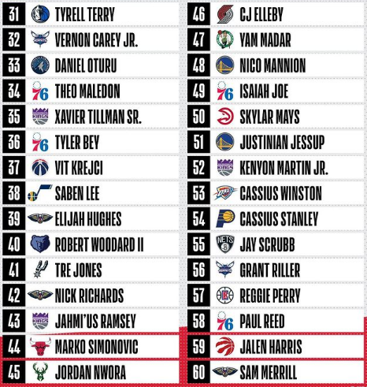

Para quem não está contextualizado, o Draft da NBA é um evento onde
times de basquete
selecionam jogadores novatos que foram convidados para a cerimônia, que vieram da
faculdade
ou até mesmo do ensino médio. Para exemplificar a importância do draft,
Michael Jordan
foi a terceira escolha do Draft de 1984 e Lebron James foi a primeira escolha do
draft de 2003.
Os times selecionam os jogadores mais promissores para suas franquias, ou negociam suas
escolhas com
outros times, veja abaixo as escolhas deste ano!
Todas as escolhas


fonte: nba.com